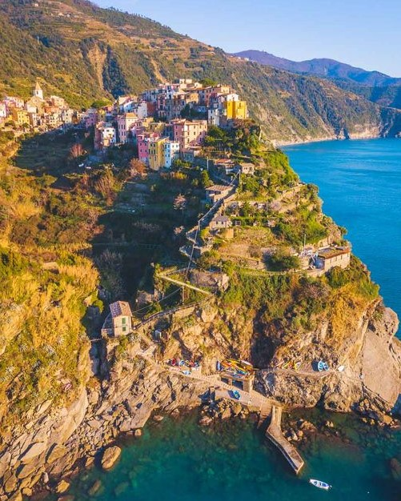

Corniglia je najmanje od pet sela i jedino nema vlastiti luku, a od ostalih sela se razlikuje po tome što je smješteno na vrhu brežuljka. Da bi se do njega došlo, treba savladati 377 stepenica od stanice vlaka.

Corniglia
Znamenitosti
Na glavnom trgu nalazi se gotička crkva Sv. Petra iz 1350. Mali trg prepun je ljudi, kafića u kojima možete uživati u pogledu na pučinu. Glavna cesta vodi do srednjevjekovnog vidikovaca La Torre s fantastičnim pogledom na terase s vinogradima koje s tri strane okružuju selo, a s četvrte se pogled pruža sve do mora.
Fun fact
Giovanni Boccacio spominje Cornigliju u svom najpoznatijem djelu „Decameron“.